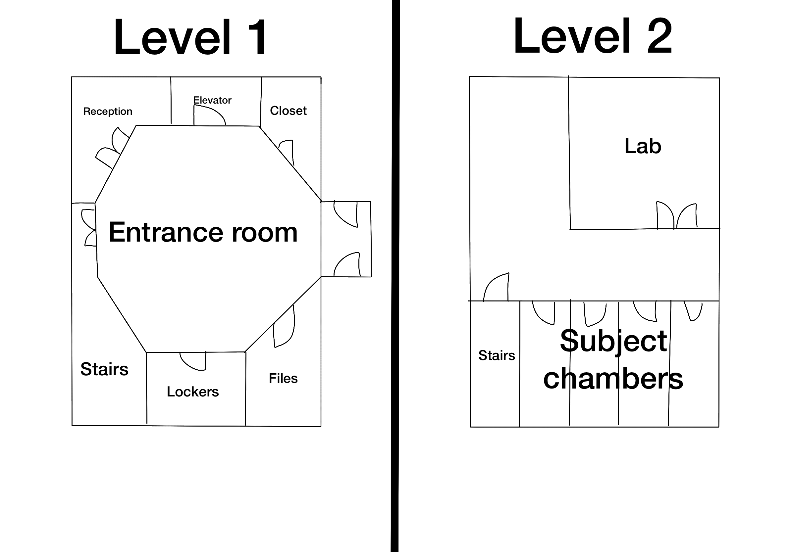

BASIC INFORMATION__
M.E.O.W. stands for Mutant Experimentation for Outer Welfare, and is funded by government operations. M.E.O.W. 's main focus is to track down and experiment on mutants for the purpose of keeping the city safe and gaining knowledge on the mass of meat (M.O.M.) that fuels the city's machines and produces the mutants. As well as this, its funding helps new medicine be produced from its labs for mutant related infections and rashes. M.E.O.W. collects type A mutants and puts them through the mutant training program which grows them into tools for M.E.O.W. to use as hunters for other type A mutants.
M.E.O.W. stands for Mutant Experimentation for Outer Welfare, and is funded by government operations. M.E.O.W. 's main focus is to track down and experiment on mutants for the purpose of keeping the city safe and gaining knowledge on the mass of meat (M.O.M.) that fuels the city's machines and produces the mutants. As well as this, its funding helps new medicine be produced from its labs for mutant related infections and rashes. M.E.O.W. collects type A mutants and puts them through the mutant training program which grows them into tools for M.E.O.W. to use as hunters for other type A mutants.
MUTANT TYPES__
CORE CREATED - TYPE A
CORE CREATED - TYPE A
Core created mutants or type A mutants are mutants that come from M.O.M. and have minds more advanced to humans. They can process information quicker and learn at a much faster rate to humans of the highest intelligence. They contain many quirks unique to the individual that can be used as weapons as a defence mechanism.
INFECTED - TYPE B
Infected mutants or type B mutants are humans that have been in contact with type A mutants flesh in their moulting stage. This flesh connects to the human through their skin and begins to control the human through their reflexes in their muscles. Type B mutants also have hive minds with other type B mutants that were in contact with the same type A mutant. This mutation begins as a skin infection or rash which if left untreated for more than a week cannot be treated.

blueprints of M.E.O.W
